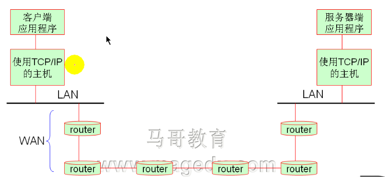
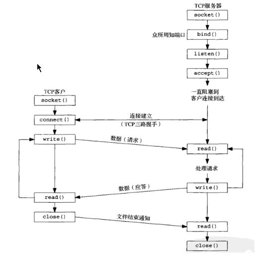

Python编程之socket模块
python网络编程：
分层模型：

跨Inter的主机间通讯： 
基于TCP客户/服务器程序的套接字函数：

In [5]: import socket
In [6]: import os
In [7]: import resocket.socket(family,type)
family:
AF_INET # 表示使用TCP/UDP套接字；
AF_UNIX # 表示使用UNIX套接字；
type:
STREAM:tcp
SOCK_DGRAM:udp
tcpconn = socket.socket(socket.AF_INET,socket.SOCK_STREAM)
第二步：绑定地址； 使用套接字对象的bind方法绑定与某地址和端口；
tcpconn.bind(('ip',port)) # 函数的参数是一个ip和port的元组
tcpconn.bind(('192.168.0.100',8023))第三步：使用listen方法进入监听状态； tcpconn.listen(backlog) # backlog： 等待队列的长度；
tcpconn.listten(100)第四步：循环监听状态： 使用套接字对象的accept方法接收用户请求； accepte() --> (socket object,address info)
编写客户端程序：
import socket
第一步：创建一个socket对象，以连接服务器端：
clientsock = socket.socket(socket.AF_INET,socket.SOCK_STREAM)
第二部：连接至服务器；
clientsock.connect(('server_ip',server_port))
clientsock.connect(('10.60.4.167',8023))
第三步：发送请求：
clientsock.send("hello world")
clientsock.recv() # 返回结果；服务器端完整脚本：
import socket
s = socket.socket(socket.AF_INET,socket.SOCK_STREAM)
sa = ('172.27.100.7',8023)
s.bind(sa)
s.listen(20)
while True:
cinfo,caddr = s.accept()
print("Got a connection from %s" % caddr[0])
data = cinfo.recv(1024)
print("Recv data: %s" % data)
cinfo.send("echo:" + data)
cinfo.close()客户端：
import socket
c = socket.socket(socket.AF_INET,socket.SOCK_STREAM)
saddr = ('192.168.0.100',8023)
c.connect(saddr)
c.send("hello server")
data = c.recv(1024)
print("Reply from server %s" % data)Web框架： Django Flask Web2py TuborGears
sys模块： sys.ext() sys.argv() # 使python脚本能获取参数；
多读代码吧，骚年!